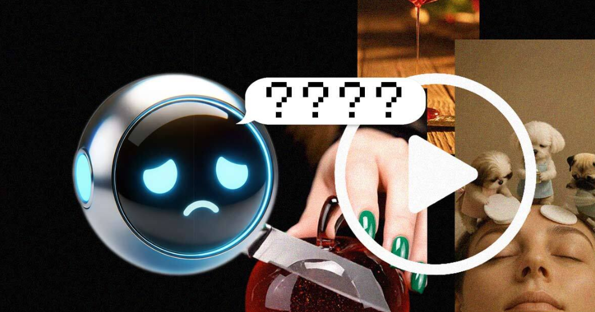

Even the most advanced chatbots don’t recognize AI-generated videos
 An experiment by NewsGuard, a media-reliability rating service, found that in most cases, leading AI chatbots couldn’t tell when videos were generated by OpenAI’s text-to-video tool Sora. Even OpenAI’s own ChatGPT is faltering.OpenAI’s Sora is really popular among AI aficionados – and misinformation actors who like the fact that the tool is able to fool many into thinking that its videos are authentic.
For instance, not that long ago, social media platforms were full of videos allegedly showing Ukrainian soldiers begging for mercy, weeping, and surrendering on the front lines – but they were all Sora-generated deepfakes.
Now, it turns out that Sora can fool AI models themselves. A NewsGuard test demonstrated that three leading chatbots – xAI’s Grok, OpenAI’s ChatGPT, and Google’s Gemini – overwhelmingly fail to detect fake videos unless they’re watermarked.
Grok, ChatGPT, and Gemini didn’t identify non-watermarked Sora videos as AI-generated 95%, 92.5%, and 78% of the time, respectively, when prompted.
ChatGPT’s 92.5% failure rate is particularly notable, since the same company, OpenAI, created and owns both ChatGPT and Sora.
According to NewsGuard, even with watermarked videos, two of the three chatbots sometimes stumbled. Grok failed to identify watermarked content as AI-generated 30% of the time, and ChatGPT missed the mark 7.5% of the time. Only Gemini succeeded in all tests.
Moreover, these Sora watermarks are extremely easy to remove. In fact, soon after Sora launched last February, multiple firms began offering free Sora watermark removal tools. NewsGuard used one of them and easily duped all three chatbots, the organization said.